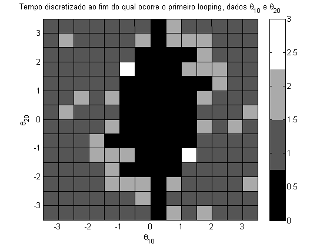

Ex. 3.4 - Sistema caótico
NOTA: a simulação é corrida a partir das equações diferenciais das variáveis de estado
Legenda da barra de cores 0 - não ocorre looping i - looping occore até ao instante definido por t_disc(i)
clear all close all m = 50; m1 = m; m2 = m; l = 1; l1 = l; l2 = l; g = 10; p10 = 0; p20 = 0; % tempo discretizado t_disc =[10*sqrt(l/g), 10^2*sqrt(l/g), 10^3*sqrt(l/g)]; i = 0; j = 0; angleMin = -3.5; angleMax = 3.5; angleStep = .5; for teta10 = angleMin:angleStep:angleMax, i= i+1; for teta20 = angleMin:angleStep:angleMax, j = j+1; load_system('sis_caotico_simples.mdl'); % a simulação deve ser posta a correr com t_disc(3) para abranger % todos os tempos set_param(gcs, 'StopTime', num2str(round(t_disc(3)))); sim('sis_caotico_simples'); first_loop_time = getFirstLoopTime(t, teta1, teta2); if(isnan(first_loop_time)) first_loop_time = Inf; end index = find(t_disc>first_loop_time, 1); if(isempty(index)) index = 0; end X(i,j) = teta10; Y(i,j) = teta20; C(i,j) = index; end j=0; end pcolor(X,Y,C); colormap(gray(4)); colorbar title('Tempo discretizado ao fim do qual ocorre o primeiro looping, dados \theta_{10} e \theta_{20}'); xlabel('\theta_{10}'); ylabel('\theta_{20}'); % e interessante notar que a matriz C obtida é simétrica por rotação de 180 % graus; dada a geometria do problema (que apresenta um eixo de simetria % segundo x=0), tal seria expectável, ou seja, o tempo do primeiro loop % para (teta10, teta20) é igual ao tempo para (-teta10, -teta20). % isequal(rot90(C,2),C) % da como resultado o valor 1